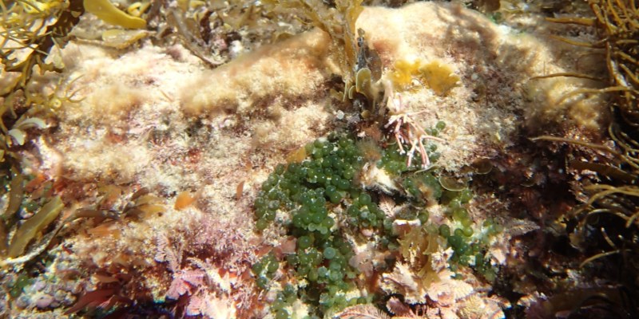
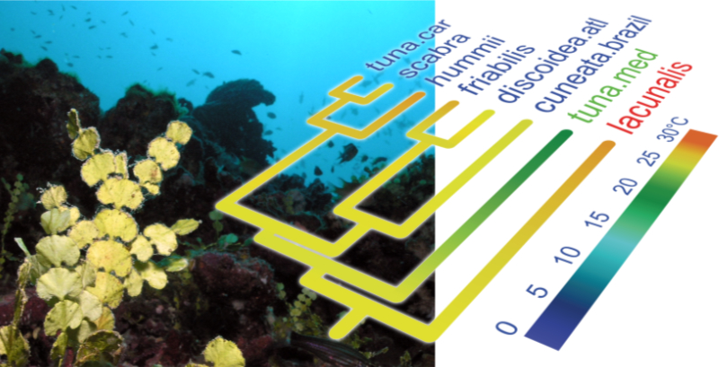
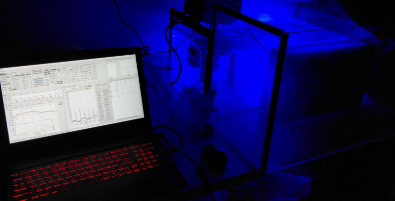
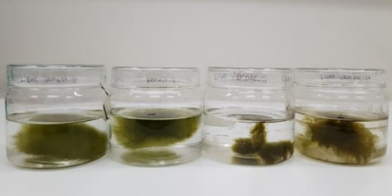
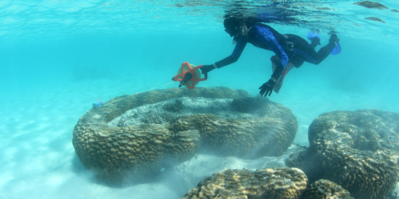
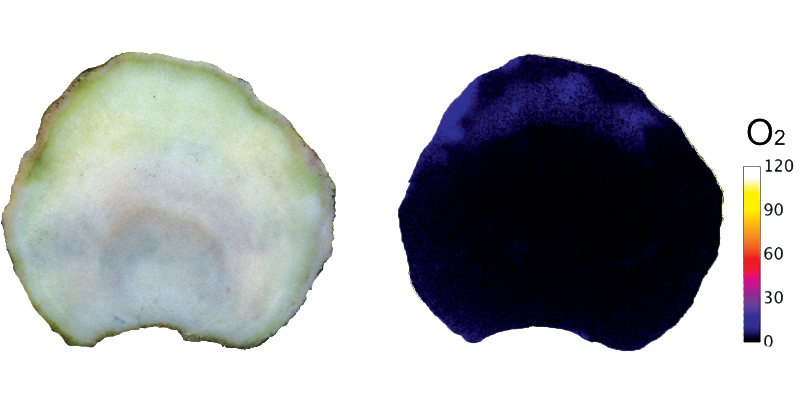

The lab has a very diverse research portfolio, both in terms of disciplines (evolution, physiology, molecular biology, genomics, taxonomy) and the organisms we study (algae, corals, prokaryotes). DNA sequencing, bioinformatics and phylogenetics take a central position in our work.
Algal evolution and biodiversity
Algae form the common denominator of the lab's research efforts. We are interested in various aspects of their biodiversity, evolution and macroecology. Eukaryotic algae have a very rich evolutionary history. They originated more than a billion years ago through a series of primary and secondary endosymbiosis events and have diversified in almost all imaginable directions.
In order to learn more about algal evolution, we reconstruct phylogenetic trees of different algal groups and use those trees to study their diversification and answer specific questions about their evolution. We focus on a range of topics in algal evolution, including speciation, evolution of traits through geological time, the emergence of important cellular and physiological innovations and plastid endosymbiosis events. To obtain reliable phylogenetic trees, we aim to use large datasets by either sequencing whole organelle genomes or transcriptomes.
We also carry out taxonomic research, asking how molecular and morphometric data can complement
one another in algal species delimitation. Morphological species delimitation tends to be problematic: because algae have fairly simple bodies and anatomies, there are relatively few characters in which closely related species can differ, and some species boundaries are blurry. We use various approaches to combine morphological and DNA data in order to accurately pinpoint species boundaries. This often comes down to use DNA data to identify 'entities' that could be considered species and subsequently characterize these entities morphologically by analyzing morphometric datasets gathered from the sequenced specimens.

Algal turfs are a remarkably biodiverse community, often with hundreds of species growing tightly together.

Combining phylogenies with trait data (temperature in this case) leads to new insights in algal evolution.
Algal biology and genomics
We are interested in how our favorite algae function in their environment, and carry out work on their physiology and genome biology to understand this better. One of the species that we focus on for this work is Ostreobium, a genus of green algae that is endolithic (rock-dwelling) in calcium carbonate substrates. Because it to literally lives in a rock, it shows a range of adaptations to the very low light conditions it experiences there. To better understand these, we are studying its photobiology using a combination of physiological work, genome sequencing, and transcriptomic experiments.
Whole genome sequences offer a window into how organisms function, and we reconstruct genome sequences for this purpose and to better understand the fundamental structure and evolution of genomes. Much of our genome sequencing work is focused on green algae, with the nuclear genome of Ostreobium recently completed and several studies on the structure and evolutionary dynamics of organelle genomes.
We are also interested in how algae associate with bacteria, and what the nature of their interactions is. It is well known that algae rely on bacteria for certain vitamins and other compounds, and that compounds produced by some bacteria deter grazers, but there is much more to learn about the diversity of these interactions and how they have come about.

Physiological experiments allow us to better understand photosynthesis of algae living in unusual habitats.

Different strains of Ostreobium, one of our preferred model species for physiological and genomic work.
Coral reefs are spectacular ecosystems held together by the calcium carbonate skeletons secreted by corals. The functions of the microbiota residing in the skeleton are barely understood, and little is known about their occurrence along the micro-environmental gradients present in the skeleton. It is clear that drastic changes happen in the skeletal microbiome during bleaching, including potential beneficial and detrimental effects on the holobiont, but very little is known with certainty. Have a look at our recent review paper on the topic to learn more: link.
Our research aims to deliver better insight into this understudied skeletal side the coral holobiont. Several micro-environmental factors likely play key roles in the distribution and activity of the endolithic microbial community, including light, pH and O2. Almost all light is absorbed by Symbiodiniaceae in the coral tissue, and the remaining light penetrating the skeleton is almost devoid of the wavelengths typically used for eukaryotic photosynthesis. Phototrophs in the skeleton have evolved far red-shifted absorption spectra or absorb near-infrared wavelengths with bacteriochlorophylls. The majority of the O2 in the skeleton is produced through the photosynthetic activity of Ostreobium. At night, the entire skeleton becomes anoxic. We aim to characterise the physico-chemical and microbial landscapes in the skeletons of healthy and bleached corals using a combination of chemical imaging to visualise O2 and pH, hyperspectral imaging to map pigment distributions and metabarcoding to understand the spatial distribution of microbial species across the skeleton.
In recent years, we have documented the highly diverse eukaryotic and prokaryotic diversity of the skeletal microbiome with environmental sequencing. At the moment, we are trying to better understand how these endolithic microbiota interact with each other, their environment and the coral host. We approach this problem through metagenomics and experimental work on healthy and bleached corals.

Sampling Porites coral boulders on Ningaloo Reef in Western Australia to study their microbiome.

Chemical imaging allows us to visualise physico-chemical gradients in the coral skeleton, in this case oxygen being produced by endolithic algae.